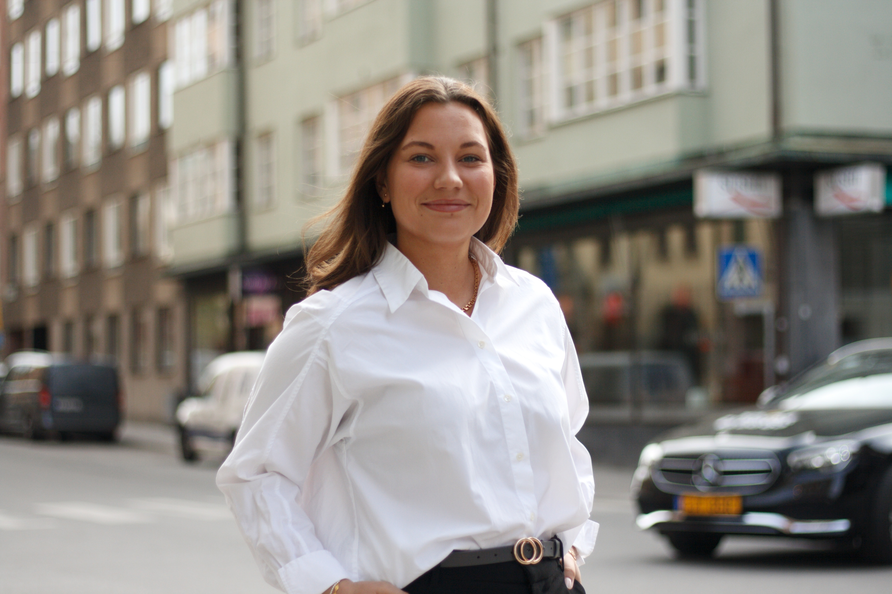
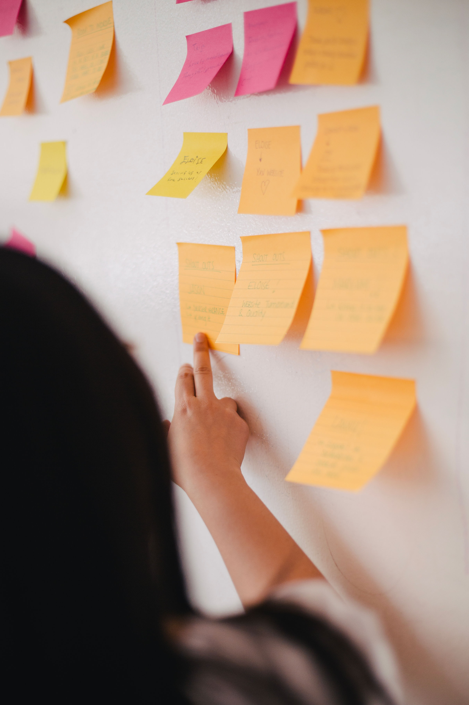

UX Designer & Project Manager
User-centered design, delivered.
UX Design: I work across the full design process from idea to finished product, including user research, design research, wireframes, prototypes, and usability testing. I have experience both creating new SaaS products and redesigning existing solutions, always in close collaboration with stakeholders to align user needs with business goals.
Programming: I have solid experience writing clean and structured HTML and CSS. My understanding of code and development workflows helps me collaborate effectively with developers and create design solutions that are realistic, implementation-friendly, and consistent.
Project Management: Alongside my design role, I have led planning and structure for development teams using agile ways of working, including Program Increments, Release Plans, and Retrospectives. I have worked closely with tech leads, team leads, CTOs, and CEOs to prioritize effectively, improve cross-team collaboration, and strengthen delivery capability.
For previous workplaces and more details, visit my LinkedIn profile.

